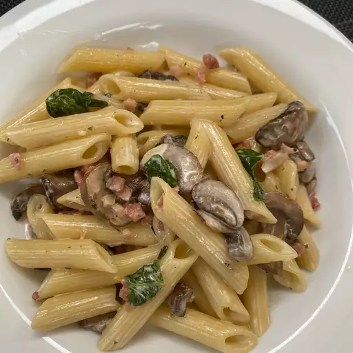

Penne with Pancetta and Mushrooms

Description
Penne with Pancetta and Mushrooms is a rich and flavorful pasta dish featuring tender penne tossed in a creamy sauce.
This dish offers a delightful balance of textures and savory tastes, perfect for a comforting and satisfying meal.
Ingredients
- 1 (12 ounce) package penne pasta
- 1 (3 ounce) package pancetta bacon, diced
- 2 tablespoons unsalted butter
- 1 (10 ounce) package sliced mushrooms
- 1 tablespoon minced garlic
- ½ cup heavy cream
- ¼ teaspoon Italian seasoning
- ¼ cup grated Parmesan cheese, or to taste
Steps
- Fill a large pot with lightly salted water and bring to a boil. Stir in penne and return to a boil.
- Cook penne uncovered, stirring occasionally, until tender yet firm to the bite, 8 to 10 minutes. Drain and set aside.
- Meanwhile, cook pancetta in a large skillet over medium heat until browned but not crispy, about 5 minutes.
- Melt butter in same skillet over medium-high heat; stir in mushrooms. Cook and stir until mushrooms softened and released their liquid.
- Add garlic; cook 2 minutes. Reduce heat to medium-low; stir in cream and Italian seasoning.
- Off heat, add penne to sauce; toss to coat. Sprinkle with Parmesan cheese; serve.
Return to Menu